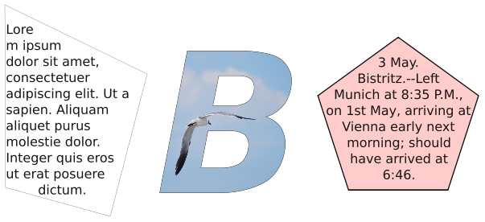
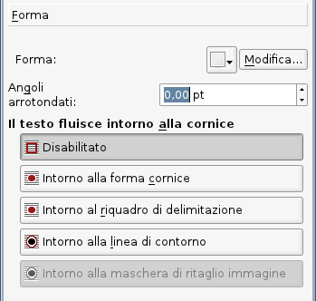
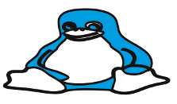
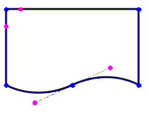
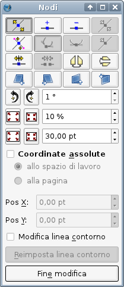
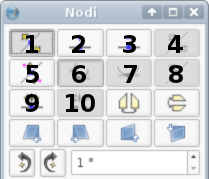
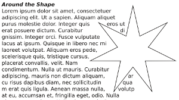
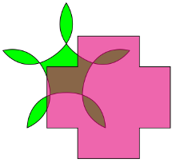

|  |
| Qui a destra è mostrata la scheda Forma nel pannello Proprietà, o più precisamente la sua parte più importante. Iniziamo con l'esaminare la voce Angoli arrotondati, poiché è una modifica di tipo semplice, che fa ciò che il nome dice. La casella di controllo è attiva, e questo ci dice che l'oggetto a cui si riferisce è una cornice “normale” (di testo, immagine, rendering) oppure è la forma rettangolare (non il poligono a 4 lati). Il valore nella casella è il raggio dell'angolo, e potete aumentarlo finché due angoli arrotondati adiacenti si incontrano: se ad esempio iniziate con un quadrato, finirete con un cerchio. Un rettangolo assumerà l'aspetto di una capsula con lati appiattiti ed estremità arrotondate. Quest'operazione si può applicare allo stesso modo a cornici di testo o immagine. |  |
|
| Un'altra facile operazione di modifica si può eseguire dall'icona con la freccia verso il basso, vicino al pulsante Modifica. Il menù a discesa che si apre è lo stesso, ben noto, dell'icona Inserisci forma sulla barra degli strumenti, ma in questo caso il risultato è una trasformazione, non la creazione di una nuova forma. Quindi, se volessimo, potremmo convertire la nostra capsula in un Tux accovacciato e obeso.
Questo si può fare anche con cornici di testo e di altro tipo, anche se una cornice di testo a forma di Tux sarà probabilmente di scarsa utilità. |
 |
|  | Passiamo ora al “piatto forte”, e cioè alla modifica di una forma o cornice per mezzo dei suoi nodi e punti di controllo. Quando premete il pulsante Modifica nella scheda Forma, si apre la finestra di dialogo Nodi mostrata a destra e la forma si trasforma in qualcosa di simile a ciò che vedete qui a sinistra, con quei cerchietti di colore blu e magenta.
Una cosa da notare subito è che in genere dove c'è un angolo sono visibili soltanto i nodi blu, ma dove c'è una curva si vedono anche i punti di controllo color magenta, che sporgono dal nodo come antenne. In realtà tutti i nodi hanno dei punti di controllo, ma quando si trovano nella stessa posizione del nodo non sono visibili. |
 |
|  | ||
| Per descrivere l'uso della finestra di dialogo per la modifica delle forme, usiamo la numerazione mostrata qui sopra per indicare i vari pulsanti che vi si trovano.
Quando la finestra viene aperta, il pulsante 1 è selezionato, e questo vi permette di spostare i nodi blu con il mouse. Oltre a spostare nodi singoli, potete fare clic e trascinare una porzione di linea compresa tra due nodi, e spostarla insieme ai suoi nodi. La porzione di linea trascinata mantiene la sua misura, forma e orientamento; sono i segmenti adiacenti ad essere adattati allo spostamento. Se premete il pulsante 5 potete spostare i punti di controllo color magenta. Quando fate clic su un nodo o punto di controllo, esso diventa rosso, e a questo punto, oltre a spostarlo col mouse, le caselle di controllo Pos X e Pos Y si attivano e indicano la posizione del punto selezionato. Se Coordinate assolute non è contrassegnato, i valori sono relativi all'angolo superiore sinistro del “riquadro di delimitazione” della forma o della cornice (vedi Che cos'è il riquadro di delimitazione? più avanti). Ricordiamo che tutte le modifiche fatte possono essere annullate con Ctrl-Z se cambiate idea. Il pulsante 2 permette di aggiungere nodi; i nuovi nodi devono trovarsi in qualche punto lungo il bordo della forma. Il pulsante 3 elimina i nodi su cui fate clic dopo averlo selezionato. Il suggerimento del pulsante 4 dice Azzera punti di controllo, ma non è chiaro come renderlo attivo. Il pulsante 6, una volta premuto, permette di spostare in modo indipendente ciascun punto di controllo. Se viene premuto il pulsante 7, i due punti di controllo di un certo nodo si dispongono su lati opposti del nodo e a uguali distanze, non appena uno di essi viene spostato. Questo tende a far sì che la linea che attraversa il nodo sia una curva uniforme e priva di spigoli. Quando un punto di controllo è selezionato, il pulsante 8 è attivo e se viene premuto, il punto di controllo viene riportato nella posizione del suo nodo. Il pulsante 9 apre la curva o forma, spezzandone il contorno. Premete il pulsante e poi fate clic su un punto del contorno a scelta: sembrerà che sia stato creato un nodo, come accade premendo il pulsante 2, ma in realtà ne sono stati creati due, e se ne spostate uno vedrete che il contorno è stato spezzato. Il pulsante 10 esegue l'operazione contraria, unendo gli estremi liberi di una curva o forma spezzata (e può anche essere usato per ottenere una figura chiusa a partire da una curva di Bézier). I pulsanti non numerati della terza riga (dopo il 10) ribaltano la forma in senso orizzontale e verticale rispettivamente. |
||
| I pulsanti nella prima riga al di sotto di quelle numerate eseguono le operazioni di distorsione. Ciascun clic su un pulsante distorce la forma di un piccolo ammontare. Qui vediamo i risultati della distorsione usando i quattro pulsanti in ordine da sinistra a destra, dove ciascuno è stato premuto 10 volte. All'inizio il lato superiore di tutte le quattro forme aveva la stessa posizione Y. |  |
 |
 |
Il riquadro di delimitazione è lo spazio rettangolare che definisce i confini di una forma e tutti i suoi componenti descrittivi. Vediamo questo concetto illustrato nella prima immagine a sinistra, che evidenzia che il riquadro di delimitazione è molto più grande della forma vera e propria. Quando passiamo alla modalità modifica, come mostrato nell'immagine accanto, vediamo che il riquadro di delimitazione comprende sempre tutti i punti di controllo della forma.
C'è una limitazione per i valori di Pos X e Pos Y, che non possono diminuire a meno di 0,0 quando sono riferiti al riquadro di delimitazione, quindi con le caselle di controllo non sarà possibile spostare nodi o punti di controllo a coordinate minori di questo valore. Tuttavia essi possono essere spostati con il mouse e l'angolo superiore sinistro del riquadro di delimitazione sarà allora riposizionato. Una soluzione alternativa può essere l'uso di Coordinate assolute, poiché i loro valori possono essere anche negativi. Intorno al riquadro di delimitazione è una delle possibilità per il flusso del testo intorno alle cornici, come si vede nell'immagine della scheda Forma. |
|  |  |
La linea di contorno non è considerata parte dei componenti dell'immagine, quindi i suoi nodi e punti di controllo possono trovarsi anche fuori dal riquadro di delimitazione.
|  |  |
 |
 |
 |
 |
Un altro particolare da notare è che nelle immagini dell'ultima fila, la combinazione più a sinistra usa una regola di riempimento pari-dispari e quella centrale usa una regola non zero. La scelta tra le due regole di riempimento si trova nella scheda Forma e si applica dopo aver combinato i poligoni.